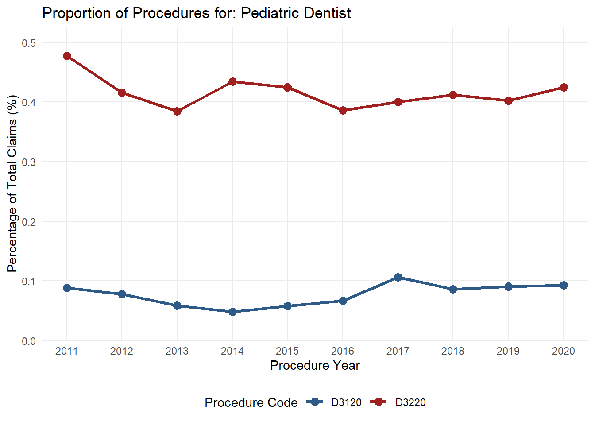
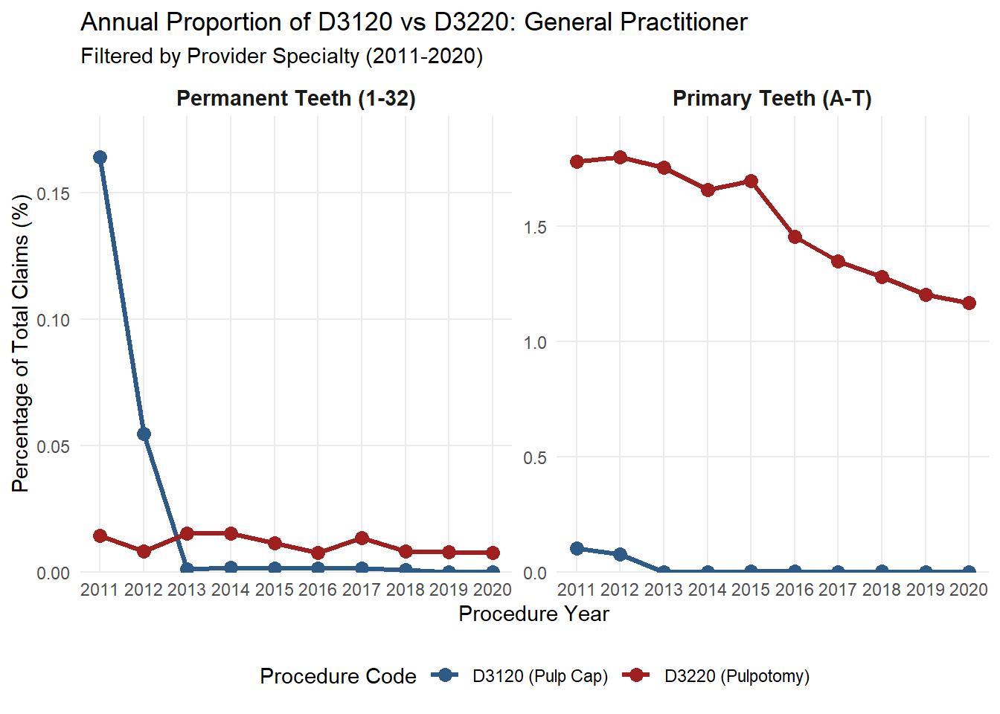
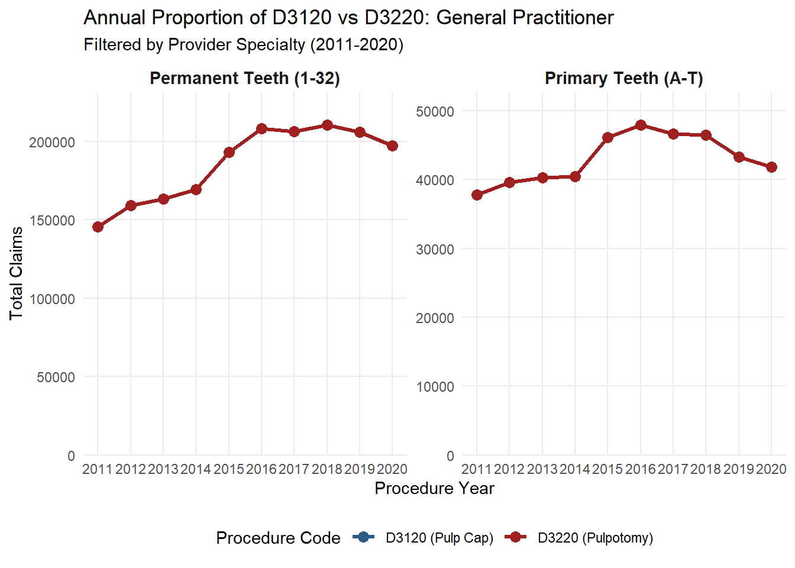
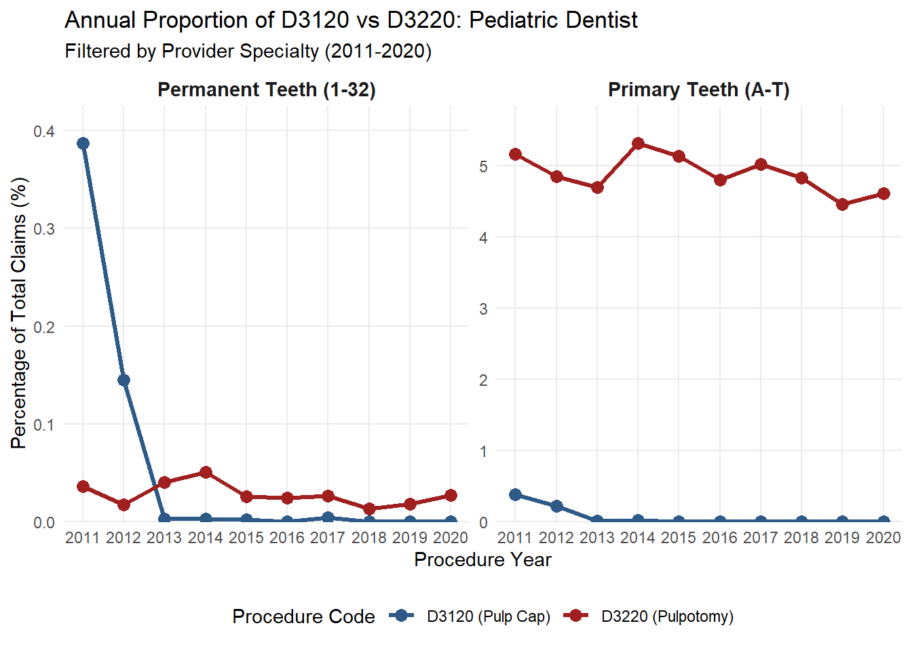
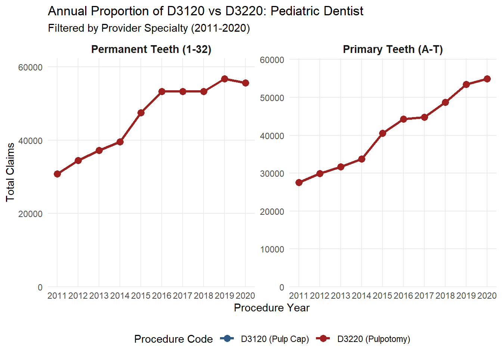

practitioner vs pediatric dentist
2026-03-18
Last updated: 2026-10-23
Checks: 6 1
Knit directory: Oral-public-health/
This reproducible R Markdown analysis was created with workflowr (version 1.7.2). The Checks tab describes the reproducibility checks that were applied when the results were created. The Past versions tab lists the development history.
The R Markdown file has unstaged changes. To know which version of
the R Markdown file created these results, you’ll want to first commit
it to the Git repo. If you’re still working on the analysis, you can
ignore this warning. When you’re finished, you can run
wflow_publish to commit the R Markdown file and build the
HTML.
Great job! The global environment was empty. Objects defined in the global environment can affect the analysis in your R Markdown file in unknown ways. For reproduciblity it’s best to always run the code in an empty environment.
The command set.seed(20240422) was run prior to running
the code in the R Markdown file. Setting a seed ensures that any results
that rely on randomness, e.g. subsampling or permutations, are
reproducible.
Great job! Recording the operating system, R version, and package versions is critical for reproducibility.
Nice! There were no cached chunks for this analysis, so you can be confident that you successfully produced the results during this run.
Great job! Using relative paths to the files within your workflowr project makes it easier to run your code on other machines.
Great! You are using Git for version control. Tracking code development and connecting the code version to the results is critical for reproducibility.
The results in this page were generated with repository version ce44110. See the Past versions tab to see a history of the changes made to the R Markdown and HTML files.
Note that you need to be careful to ensure that all relevant files for
the analysis have been committed to Git prior to generating the results
(you can use wflow_publish or
wflow_git_commit). workflowr only checks the R Markdown
file, but you know if there are other scripts or data files that it
depends on. Below is the status of the Git repository when the results
were generated:
Ignored files:
Ignored: .Rhistory
Ignored: analysis/ddwi_part1_cache/
Ignored: analysis/part1_cache/
Unstaged changes:
Modified: analysis/ddwi_part3.Rmd
Note that any generated files, e.g. HTML, png, CSS, etc., are not included in this status report because it is ok for generated content to have uncommitted changes.
These are the previous versions of the repository in which changes were
made to the R Markdown (analysis/ddwi_part3.Rmd) and HTML
(docs/ddwi_part3.html) files. If you’ve configured a remote
Git repository (see ?wflow_git_remote), click on the
hyperlinks in the table below to view the files as they were in that
past version.
| File | Version | Author | Date | Message |
|---|---|---|---|---|
| Rmd | ce44110 | Han | 2026-10-23 | 10/23/2026 |
| html | ce44110 | Han | 2026-10-23 | 10/23/2026 |
| Rmd | 410c4e4 | Han | 2026-10-20 | 10/20/2026 |
| html | 410c4e4 | Han | 2026-10-20 | 10/20/2026 |
| Rmd | 55cf8ed | han | 2026-04-24 | 4/24/2026 |
| Rmd | 327ad11 | han | 2026-04-15 | 4/15/2026 |
| html | 327ad11 | han | 2026-04-15 | 4/15/2026 |
Look at General Practitioner vs Pediatric Dentist D3220 Over time and D3120 over time (to show trends in the use of the therapies) can we do this for both GP and Peds Would like to separate Primary (Teeth #A-#T) and Permanent (#1-#32) Using the D7140 as a subsequent code would indicate further treatment that was required on this tooth. I am wondering if we can use the same time frame for the Kaplan-Meier survival. Would we be able to seperate teeth #A-#T , and then teeth #1-#32, that way the primary and permanent teeth are separated.
library(qs2)
path="C:\\Shengtong\\Research\\AllCollaboration\\2024\\202405\\Pradeep\\DDWI\\DDWI\\"
demo <- qs_read(paste(path, "demographic_combined_all.qs2", sep=""))
claims <- qs_read(paste(path, "claims_combined_all.qs2", sep=""))plot by specialty
library(dplyr)
library(lubridate)
library(ggplot2)
library(tidyr)
plot_by_specialty <- function(df, specialty) {
# 1. Process data and calculate yearly proportions for the specific specialty
plot_data <- df %>%
# Filter for the specific specialty provided in the function argument
filter(`Provider Specialty Name` == specialty) %>%
mutate(
# Extract year from Service Date
Year = year(as.Date(`Service Date`)),
# Ensure code is a string and handle potential "D" prefix
Code = gsub("D", "", as.character(`Submitted Procedure Code`))
) %>%
# Filter for the years requested
filter(Year >= 2011 & Year <= 2020) %>%
group_by(Year) %>%
summarize(
Total_N = n(),
# Count 3120 and 3220 individually
Count_3120 = sum(Code == "3120", na.rm = TRUE),
Count_3220 = sum(Code == "3220", na.rm = TRUE),
# Calculate Percentage (* 100)
`3120` = (Count_3120 / Total_N) * 100,
`3220` = (Count_3220 / Total_N) * 100,
.groups = "drop"
) %>%
# Reshape to "Long" format for ggplot
pivot_longer(cols = c(`3120`, `3220`),
names_to = "Procedure",
values_to = "Percentage")
# 2. Create the Plot
p <- ggplot(plot_data, aes(x = Year, y = Percentage, color = Procedure, group = Procedure)) +
geom_line(size = 1.2) +
geom_point(size = 3) +
# Force X-axis to show every year from 2011 to 2020
scale_x_continuous(breaks = 2011:2020) +
# Set Y-axis scale
scale_y_continuous(limits = c(0, NA), expand = expansion(mult = c(0, 0.1))) +
scale_color_manual(values = c("3120" = "#2E5A88", "3220" = "#A02020"),
labels = c("D3120", "D3220")) +
labs(
title = paste("Proportion of Procedures for:", specialty),
x = "Procedure Year",
y = "Percentage of Total Claims (%)",
color = "Procedure Code"
) +
theme_minimal() +
theme(
panel.grid.minor = element_blank(),
axis.text.x = element_text(angle = 0),
legend.position = "bottom"
)
#return(p)
return(list(
plot = p,
table_report = plot_data
))
}General Practitioner
gp_results=plot_by_specialty(claims, "General Practitioner")
gp_results$plot
| Version | Author | Date |
|---|---|---|
| 327ad11 | han | 2026-04-15 |
gp_results$table_report%>%
datatable(extensions = 'Buttons',
caption = "",
options = list(dom = 'Blfrtip',
buttons = c('copy', 'csv', 'excel', 'pdf', 'print'),
lengthMenu = list(c(10,25,50,-1),
c(10,25,50,"All"))))Pediatric Dentist
pd_results=plot_by_specialty(claims, "Pediatric Dentist")
pd_results$plot
| Version | Author | Date |
|---|---|---|
| 410c4e4 | Han | 2026-10-20 |
pd_results$table_report%>%
datatable(extensions = 'Buttons',
caption = "",
options = list(dom = 'Blfrtip',
buttons = c('copy', 'csv', 'excel', 'pdf', 'print'),
lengthMenu = list(c(10,25,50,-1),
c(10,25,50,"All"))))specialty trends
library(dplyr)
library(lubridate)
library(ggplot2)
library(tidyr)
plot_specialty_trends <- function(data, specialty_name) {
# 1. Process data: Filter by specialty, define tooth groups, and calculate proportions
plot_data <- data %>%
# Filter for the specific specialty
filter(`Provider Specialty Name` == specialty_name) %>%
mutate(
# Extract Year
Year = year(as.Date(`Service Date`)),
# Clean Procedure Code
Code = gsub("D", "", as.character(`Submitted Procedure Code`)),
# Define Tooth Groups (Primary vs Permanent)
Tooth_Group = case_when(
`Tooth Number` %in% LETTERS[1:20] ~ "Primary Teeth (A-T)",
as.numeric(`Tooth Number`) %in% 1:32 ~ "Permanent Teeth (1-32)",
TRUE ~ "Other/Unknown"
)
) %>%
# Filter for the years 2011-2020 and valid tooth groups
filter(Year >= 2011 & Year <= 2020,
Tooth_Group != "Other/Unknown") %>%
group_by(Year, Tooth_Group) %>%
summarize(
Total_N = n(),
Count_3120 = sum(Code == "3120", na.rm = TRUE),
Count_3220 = sum(Code == "3220", na.rm = TRUE),
# Calculate Percentage (%) - only multiply by 100 once here
`3120` = (Count_3120 / Total_N) * 100,
`3220` = (Count_3220 / Total_N) * 100,
.groups = "drop"
) %>%
# Reshape to "Long" format for plotting
pivot_longer(cols = c(`3120`, `3220`),
names_to = "Procedure",
values_to = "Percentage")
# 2. Create the Plot
# Note: y = Percentage (no need to *100 again because it was done in summarize)
p1 <- ggplot(plot_data, aes(x = Year, y = Percentage, color = Procedure, group = Procedure)) +
geom_line(size = 1.2) +
geom_point(size = 3) +
# Split the plot into two panels for Primary vs Permanent
facet_wrap(~Tooth_Group, scales = "free_y") +
scale_x_continuous(breaks = 2011:2020) +
scale_y_continuous(limits = c(0, NA), expand = expansion(mult = c(0, 0.1))) +
scale_color_manual(values = c("3120" = "#2E5A88", "3220" = "#A02020"),
labels = c("D3120 (Pulp Cap)", "D3220 (Pulpotomy)")) +
labs(
title = paste("Annual Proportion of D3120 vs D3220:", specialty_name),
subtitle = "Filtered by Provider Specialty (2011-2020)",
x = "Procedure Year",
y = "Percentage of Total Claims (%)",
color = "Procedure Code"
) +
theme_minimal() +
theme(
panel.grid.minor = element_blank(),
strip.text = element_text(size = 11, face = "bold"),
legend.position = "bottom"
)
p2 <- ggplot(plot_data, aes(x = Year, y = Total_N, color = Procedure, group = Procedure)) +
geom_line(size = 1.2) +
geom_point(size = 3) +
# Split the plot into two panels for Primary vs Permanent
facet_wrap(~Tooth_Group, scales = "free_y") +
scale_x_continuous(breaks = 2011:2020) +
scale_y_continuous(limits = c(0, NA), expand = expansion(mult = c(0, 0.1))) +
scale_color_manual(values = c("3120" = "#2E5A88", "3220" = "#A02020"),
labels = c("D3120 (Pulp Cap)", "D3220 (Pulpotomy)")) +
labs(
title = paste("Annual Proportion of D3120 vs D3220:", specialty_name),
subtitle = "Filtered by Provider Specialty (2011-2020)",
x = "Procedure Year",
y = "Total Claims",
color = "Procedure Code"
) +
theme_minimal() +
theme(
panel.grid.minor = element_blank(),
strip.text = element_text(size = 11, face = "bold"),
legend.position = "bottom"
)
#return(p)
return(list(
prop_plot = p1,
count_plot=p2,
table_report = plot_data
))
}General Practitioner
gp_result=plot_specialty_trends(claims, "General Practitioner")
gp_result$prop_plot
gp_result$count_plot
gp_result$table_report%>%
datatable(extensions = 'Buttons',
caption = "",
options = list(dom = 'Blfrtip',
buttons = c('copy', 'csv', 'excel', 'pdf', 'print'),
lengthMenu = list(c(10,25,50,-1),
c(10,25,50,"All"))))Pediatric Dentist
# For Pediatric Dentists:
pd_result=plot_specialty_trends(claims, "Pediatric Dentist")
pd_result$prop_plot
pd_result$count_plot
pd_results$table_report%>%
datatable(extensions = 'Buttons',
caption = "",
options = list(dom = 'Blfrtip',
buttons = c('copy', 'csv', 'excel', 'pdf', 'print'),
lengthMenu = list(c(10,25,50,-1),
c(10,25,50,"All"))))
sessionInfo()R version 4.6.1 (2026-06-24 ucrt)
Platform: x86_64-w64-mingw32/x64
Running under: Windows 11 x64 (build 26200)
Matrix products: default
LAPACK version 3.12.1
locale:
[1] LC_COLLATE=English_United States.utf8
[2] LC_CTYPE=English_United States.utf8
[3] LC_MONETARY=English_United States.utf8
[4] LC_NUMERIC=C
[5] LC_TIME=English_United States.utf8
time zone: America/Chicago
tzcode source: internal
attached base packages:
[1] grid stats graphics grDevices utils datasets methods
[8] base
other attached packages:
[1] qs2_0.3.1 VennDiagram_1.8.2 futile.logger_1.4.9
[4] condsurv_1.0.0 devtools_2.5.2 usethis_3.2.2
[7] tidycmprsk_1.1.2 gtsummary_2.6.1 ggsurvfit_1.2.1
[10] irr_0.85 lpSolve_5.6.23 readxl_1.5.0.1
[13] cowplot_1.2.0 matrixStats_1.5.0 gridExtra_2.3.1
[16] DT_0.34.0 rstatix_1.1.0 ggpubr_1.0.0
[19] kableExtra_1.4.1 lubridate_1.9.5 forcats_1.0.1
[22] stringr_1.6.0 dplyr_1.2.1 purrr_1.2.2
[25] readr_2.2.0 tidyr_1.3.2 tibble_3.3.1
[28] ggplot2_4.0.3 tidyverse_2.0.0 rprojroot_2.1.1
loaded via a namespace (and not attached):
[1] formatR_1.14 rlang_1.3.0 magrittr_2.0.5
[4] git2r_0.36.2 otel_0.2.0 compiler_4.6.1
[7] systemfonts_1.3.2 vctrs_0.7.3 pkgconfig_2.0.3
[10] fastmap_1.2.0 backports_1.5.1 ellipsis_0.3.3
[13] labeling_0.4.3 promises_1.5.0 rmarkdown_2.32
[16] sessioninfo_1.2.4 tzdb_0.5.0 xfun_0.61
[19] cachem_1.1.0 jsonlite_2.0.0 later_1.4.8
[22] broom_1.0.13 R6_2.6.1 bslib_0.12.0
[25] stringi_1.8.9 RColorBrewer_1.1-3 car_3.1-5
[28] pkgload_1.5.3 jquerylib_0.1.4 cellranger_1.1.0
[31] Rcpp_1.1.2 knitr_1.52 httpuv_1.6.17
[34] Matrix_1.7-5 splines_4.6.1 timechange_0.4.0
[37] tidyselect_1.2.1 rstudioapi_0.19.0 abind_1.4-8
[40] yaml_2.3.12 stringfish_0.19.2 pkgbuild_1.4.8
[43] lattice_0.22-9 withr_3.0.3 S7_0.2.2
[46] evaluate_1.0.5 lambda.r_1.2.4 survival_3.8-6
[49] RcppParallel_6.2.1 xml2_1.6.0 pillar_1.11.1
[52] carData_3.0-6 whisker_0.4.1 generics_0.1.4
[55] hms_1.1.4 scales_1.4.0 glue_1.8.1
[58] tools_4.6.1 ggsignif_0.6.4 fs_2.1.0
[61] crosstalk_1.2.2 Formula_1.2-6 cli_3.6.6
[64] textshaping_1.0.5 workflowr_1.7.2 futile.options_1.0.1
[67] viridisLite_0.4.3 svglite_2.2.2 gtable_0.3.6
[70] sass_0.4.10 digest_0.6.39 htmlwidgets_1.6.4
[73] farver_2.1.2 memoise_2.0.1 htmltools_0.5.9
[76] lifecycle_1.0.5